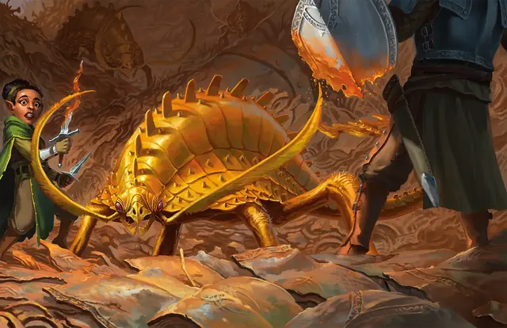

Ржавник
Rust Monster
Среднее Чудовище, без мировоззрения

Класс Защиты 14 Инициатива +1 (11)
Хиты 33 (6к8 + 6)
Скорость 40 футов
| мод | спас | ||
|---|---|---|---|
| СИЛ | 13 | +1 | +1 |
| ЛОВ | 12 | +1 | +1 |
| ТЕЛ | 13 | +1 | +1 |
| мод | спас | ||
|---|---|---|---|
| ИНТ | 2 | −4 | −4 |
| МДР | 13 | +1 | +1 |
| ХАР | 6 | −2 | −2 |
Чувства Тёмное зрение 60 футов, пассивное Восприятие 11
Языки нет
Опасность 1/2 (100 опыта; БВ +2)
Особенности
Нюх на металл. Ржавник может определить местонахождение содержащего железо металла в пределах 30 футов от себя.
Действия
Мультиатака. Ржавник совершает одну атаку Укусом и дважды использует Антенны.
Укус. Бросок рукопашной атаки: +3, досягаемость 5 фт. Попадание: 5 (1к8 + 1) Колющего урона.
Антенны. Ржавник нацеливается на один немагический металлический объект в виде доспеха или оружия, который несёт или носит существо, в пределах 5 футов от себя. Спасбросок Ловкости: Сл 11, существо с этим объектом. Провал: Объект получает штраф -1 к КЗ, который он предоставляет (доспех), или к броскам атаки (оружие). Доспех уничтожается, если штраф уменьшает КЗ до 10, а оружие уничтожается, если штраф достиг -5. Этот штраф может быть убран сотворением заклинания Починка на доспехе или оружии.
Уничтожение металла. Ржавник касается немагического металлического объекта в пределах 5 футов от себя, который никто не носит и не несёт. Это прикосновение уничтожает 1-футовый Куб этого объекта.
Реакции
Рефлекторные антенны. Условие: По ржавнику попадают атакой. Эффект: Ржавник использует Антенны.
Бонус мастерства +2
Среда обитания Подземье
Сокровища Отсутствуют